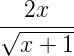
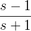
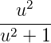
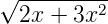
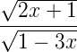
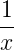
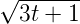

-
Problem 1.
- Find the first and second derivatives of the following functions
-
i)
- f(x) = 3x4 - 2x3 + 10x2
-
ii)
- f(x) = (x + 1)10
-
iii)
- f(x) = (2x2 - 1)4
-
iv)
- g(x) = 
-
v)
- h(s) = 
-
vi)
- g(u) = 
-
vii)
- f(x) = 
-
viii)
- g(x) = 
-
Problem 2.
- Find the third derivative of the following functions
-
i)
- f(x) = 
-
ii)
- g(t) = 
-
iii)
- h(s) = (2 + 3s)4
-
iv)
- f(x) = (x2 - 1)5
In addition to the above, you should do the following
- section 3.4 questions 3-17
- section 3.5 questions 1-28